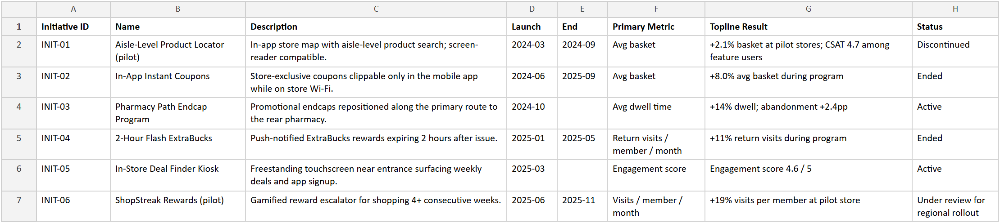
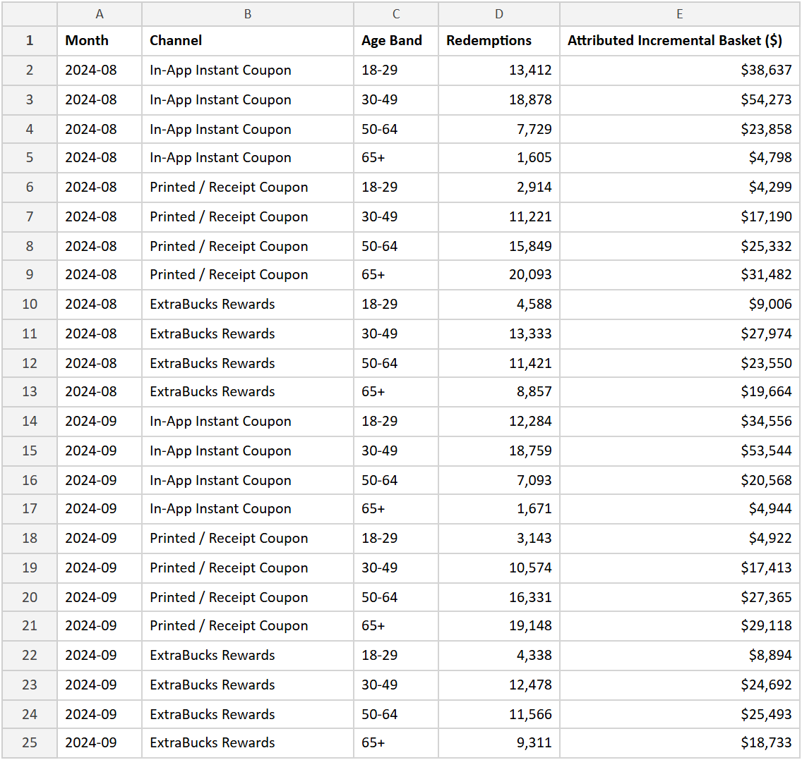
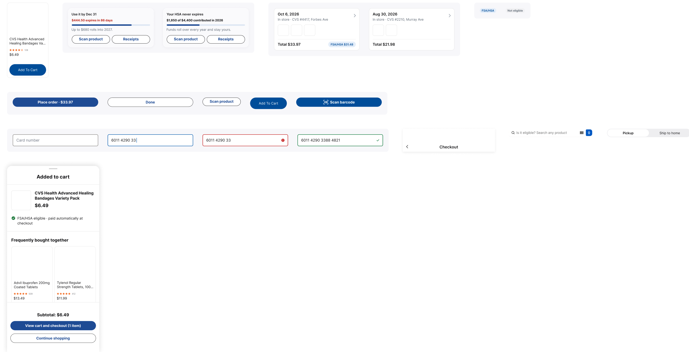
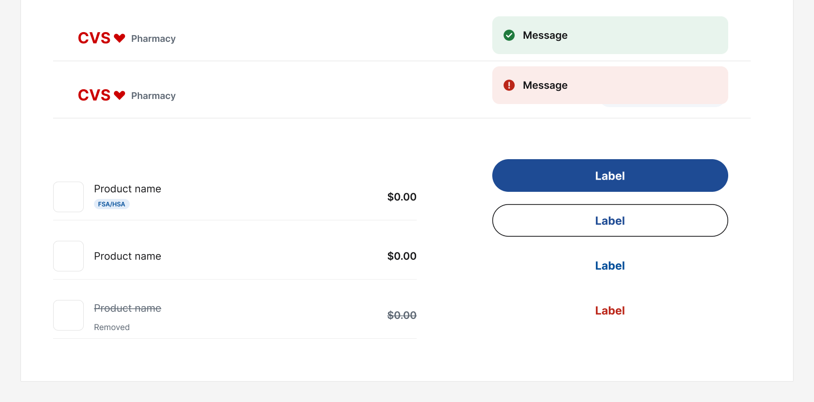

The app shows your FSA balance and deadline, checks products for eligibility, and splits the cart between the FSA and another card. So does the register.
The brief asked for an app-first feature that keeps customers in the store longer, measured in dollars: basket size, return visits, conversion and fewer walk-outs. It came with a prototype, ExtraTime, and six earlier initiatives not to repeat. Read against the analytics package, it had three problems:
Dwell rose 14% after the endcaps moved, and abandonment rose two points with it.
Seniors, the most loyal shoppers, made 4% of in-app coupon redemptions.
The two-hour ExtraBucks timer drew the sharpest survey comments and a $47,500 settlement.
The brief came with Region 4's analytics package: thirty months of metrics from eight Pittsburgh stores, six earlier initiatives and their results, coupon redemptions by age, and a sample of survey comments. I read it for what had already been tried and how shoppers answered, then looked at national data on FSAs.
Shoppers 65 and over redeemed 8% of their coupons in the app, against 81% for 18 to 29. In the same two months they redeemed 39,241 printed ones.
Share of coupon redemptions made in the app, Aug–Sep 2024. Coupon Redemptions tab.


An FSA is pre-tax money for medical costs, and it expires. In 2022, 52% of accountholders forfeited part of theirs to their employer, $441 on average. In 2023 it was still roughly half, $436 on average.
EBRI's analysis of 3.2 million FSAs, 2022 and 2023.
Whatever replaced the brief had to work for people who never open the app and not rush anyone. Meanwhile, half of FSA holders were losing money meant for what CVS sells.
Sources: CVS Region 4 analytics package provided with the brief, covering January 2024 to June 2026 across eight stores; survey comments are the package's stratified sample, about 2% of responses. EBRI analysis of 3.2 million FSAs, May 2024; PlanSponsor on the same report, with the 52% figure; EBRI on 2023, May 2025.
CVS sells what FSA money is for, so I changed the question: from keeping people in the store to helping them spend what they already have before it is gone.
From
"How might the app keep customers in the store longer?"
To
"How might the app help people spend their FSA here before it expires?"
Chain pharmacies run IIAS, which tags each product eligible or not and charges the FSA the eligible total. It runs when the card is presented, so shoppers see the split only at payment.
I started by designing an eligibility checker, then realised the register already calculates the answer.
From
"Is this eligible?"
To
"$31.48 can go on your FSA"
Workers whose claims were all approved at the register forfeited $114 more on average than those who submitted at least one by hand, and were 13 points more likely to forfeit. EBRI suggests inertia may play a part. Making payment easy is not enough; people need to see what is left before they pay.
EBRI, December 2024. The two averages as reported by Investopedia.
Sources: NMI on IIAS at checkout; Flex on IIAS item checks; EBRI on FSA substantiation, December 2024; Investopedia's report of the averages, December 2024.
CVS's app is several products in one shell, with three different tab bars between them. I kept its patterns and made them consistent; the register got its own small set.
Navy pill buttons, the search field, the plan card's progress bar, the product card.
One tab bar. Red only for the heart and the amount that expires. One eligibility tag, from product card to register.


Each phone is the working prototype, looping one step of the flow.
You log in on the provider's own page, and CVS receives the balances and plan dates. The camera then reads the card, so it can pay in the app.
Below the balance: what expires on December 31 and what can carry over into 2027. The HSA tab notes that HSA money does not expire.
SPF lip balm comes back eligible. Chocolate doesn't, because under IRS rules food isn't a medical expense.
Each time the cart changes, the bar showing the FSA and card amounts updates.
At checkout, the register scans the barcode in the app and charges the eligible items to the FSA card. The app's balance then updates.

The shopper's phone
The register's customer screen
Orders filter to FSA and HSA purchases. Each receipt marks every item's eligibility, so WEX can verify a claim.
Sources: IRS on food, vitamins and general health; FSAFEDS on over-the-counter medicines; IRS Rev. Proc. 2025-32 on the $680 carryover into 2027.
Shoppers who do not use the app still pay at the register, so its customer screen shows the same split to everyone and takes one card at a time.
The FSA card pays for the eligible items first, then a second card pays for the rest.
The screen asks for the ExtraCare card before anything is scanned.

Two of the three items are eligible, and $31.48 can go on the FSA.

Step 1 of 2: tap or insert the FSA card for $31.48.

The FSA paid $31.48 for two items. Step 2 of 2 is $4.19 on another card.

WEX FSA paid $31.48 and Visa paid $4.19, a total of $35.67.
The FSA covers $20.00 of $31.48, and the remaining $11.48 moves to the second card.

The FSA covered $20.00 of $31.48, all it had left; $15.67 remains.

WEX FSA paid $20.00 and Visa paid the remaining $15.67.
After the FSA has paid, the shopper can remove the item that needed a second card.

The FSA has paid $31.48. The shopper can pay $4.19 now, remove the bar, or cancel.

The chocolate bar is removed and the order completes at $31.48 on the FSA.
Cancelling after the FSA has paid refunds the FSA payment.

The order is cancelled and the $31.48 FSA payment is reversed.
The design is still untested in three places.
Only a WCAG self-audit so far. Seniors and first-time FSA users would show what it can't.
The case rests on national FSA averages, not CVS's own rates.
The pause between a card tap and a confirmed split can't be staged in Figma.